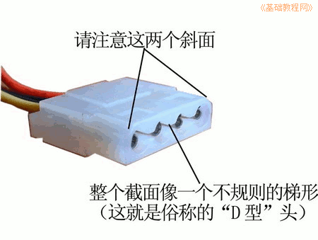
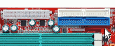

硬件基础教程
作者：TeliuTe 来源：基础教程网
硬盘是大容量存储设备，用来保存各种数据和文件，下面我们来看一个练习；
1、内置硬盘
1）硬盘呈长方形，正面是标签，标有厂家、型号、容量，容量一般是GB单位；
2）硬盘的接线有数据线和电源线，一边短的插座是电源，梯形插槽跟电源线相匹配，

数据线在旁边宽的一边，中间有一个凸起，跟插槽相对应，数据线一边有一条红线，跟电源的红线相邻；
3）数据线的另一头接到主板上，在靠近主板边上有两个长方形插槽，可以接两条数据线；

2、硬盘维护
1）硬盘平稳固定在机箱的盒子内，水平放置、标签朝上；
2）供电应良好稳定，机箱电源有足够的功率，工作时避免机箱震动，按操作关闭系统，避免突然断电和强行关机；
3）注意散热，与光驱之间有一定距离，以便于通风散热；
4）使用单独的数据线，在机箱内排列整齐勿折，捆扎好便于机箱内通风；
本节学习了硬盘的基础知识，如果你成功地完成了练习，请继续学习下一课内容；
本教程由86团学校TeliuTe制作|著作权所有
基础教程网：http://teliute.org/
美丽的校园……
转载和引用本站内容，请保留版权信息和本站链接。